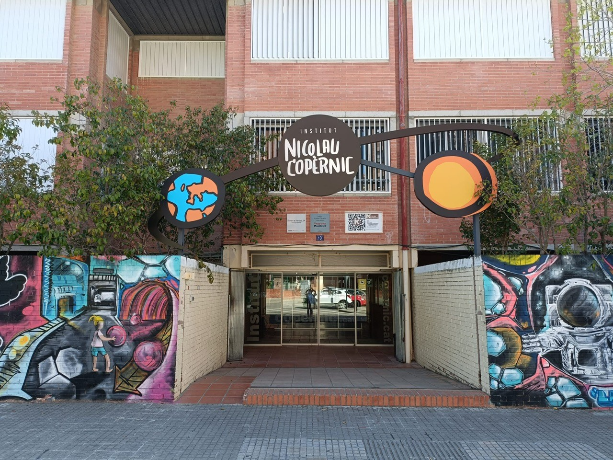

Ultima Actualización: 07/04/2026
El Instituto Nicolau Copèrnic es donde yo he estudiado el Grado Medio de informática (Sistemas microinformáticos y redes) que ofrecen. Este centro educativo público se encuentra en la Calle Torrent del Batlle, 10 en la ciudad de Terrassa.

Las obras del centro Nicolau Copèrnic se iniciaron y acabaron durante el año 1978. Desde ese año donde solo ofrecían las educaciones de ESO y bachillerato hasta ahora, el centro ha sufrido varios cambios. Pasó de no tener un edificio propio a ser uno de los únicos tres centros que ofrecían la formación de Bachillerato en la época de los 1985-1986 y ahora a ser uno de los más de seis centros que actualmente existen en la ciudad.
Durante los años 1990 reformó el edificio con el objetivo de poder acoger también a personas con discapacidad.
El hecho de haber hoy más centros que ofrecen la formación de Bachillerato y, de esta manera, también una liberación de espacios, no supuso un problema para el centro. Nicolau Copèrnic aprovechó estos espacios para aulas específicas para cada asignatura, así como Música o Ciencias Sociales.
Durante los primeros años de la década de los 2000, más concretamente en 2004, implementó el ciclo de FP de grado medio; unos años más tarde (2006) comenzó con el ciclo de grado superior. De esta forma se ha convertido en el único centro de la ciudad de Terrassa en ofrecer formación de esta especialidad.
Por tanto, el centro lleva más de 40 años ofreciendo formación.